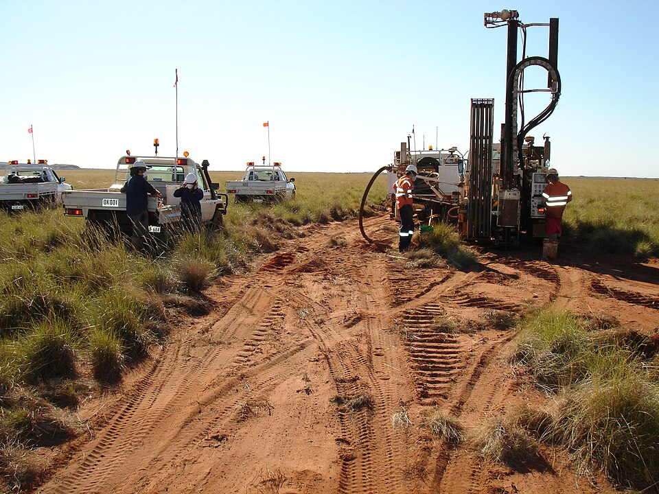
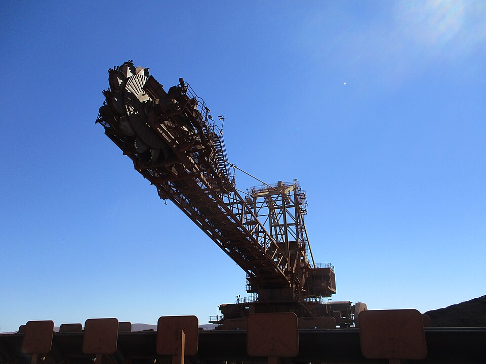
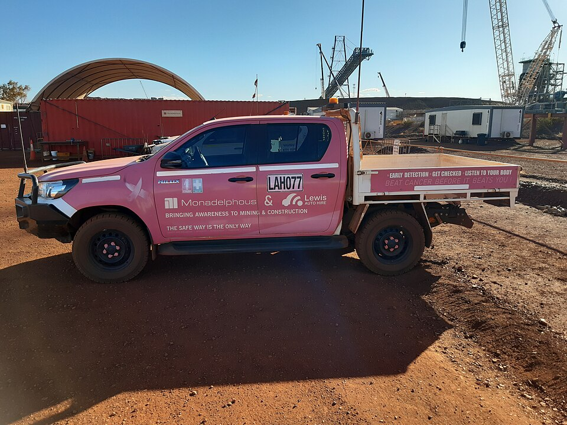
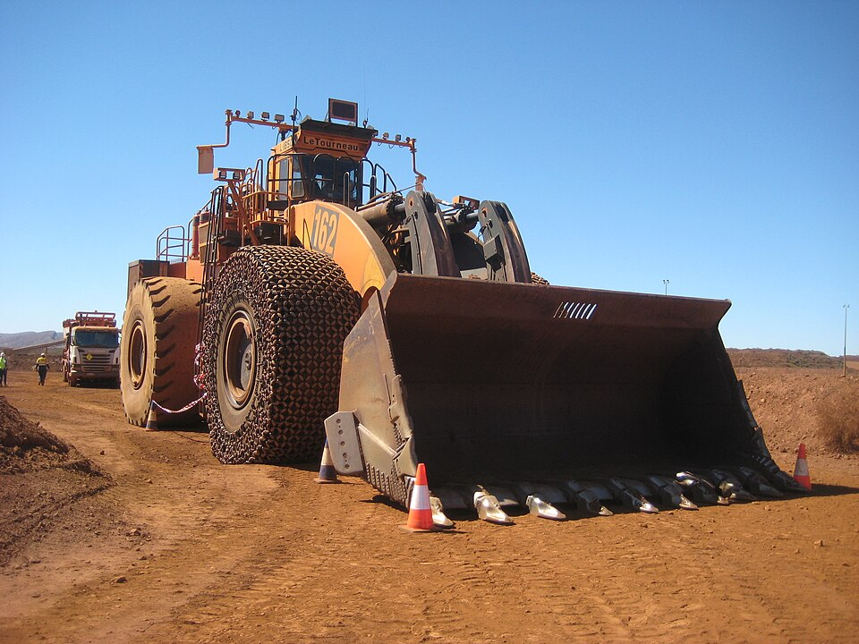
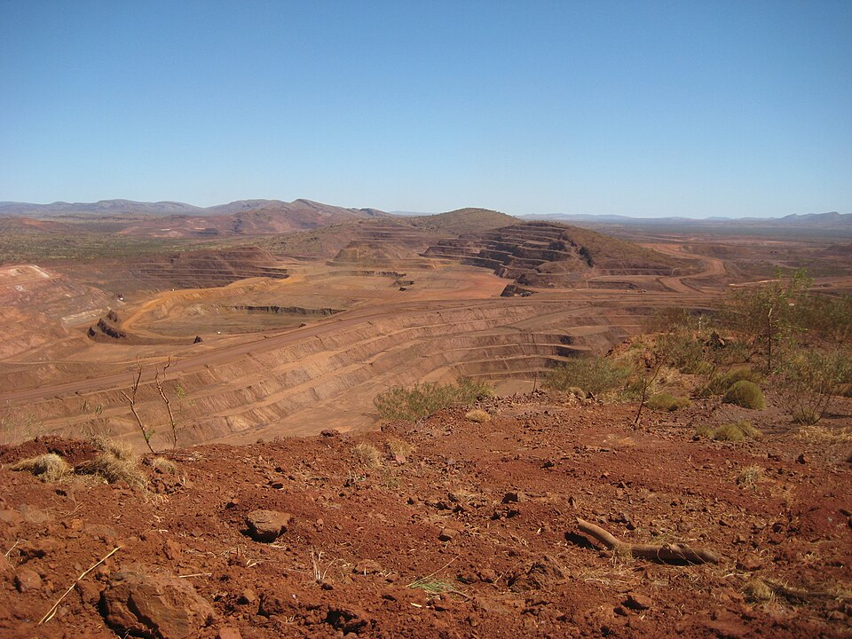

Early Project Signals
Drilling crew in the Pilbara, Western Australia.
Photograph by Calistemon. Drill rig, Pilbara, August 2007.jpg
{kind=link}
Licensed under CC BY-SA 3.0.
The five homepage photographs show real mining, fieldwork and construction activity in the Pilbara, Western Australia.
Images are historical industry photographs, not live project records. They are reproduced from Wikimedia Commons at a reduced resolution and cropped to fit the homepage cards using CSS. No sky replacement, colour filter or generated imagery has been applied.
Each photograph and its displayed crop retain the Creative Commons licence linked below. The photographers and pictured organisations do not endorse Hire Intelligence.

Drilling crew in the Pilbara, Western Australia.
Photograph by Calistemon. Drill rig, Pilbara, August 2007.jpg
Licensed under CC BY-SA 3.0.

Reclaimer at Brockman 4 iron ore mine, July 2019.
Photograph by Calistemon. Brockman 4 Reclaimer, July 2019 01.jpg
Licensed under CC BY-SA 4.0.

Contractor vehicle and mine construction site in the Pilbara, December 2021.
Photograph by Calistemon. Pink breast cancer awareness Toyota HiLux in the Pilbara, December 2021 02.jpg
Licensed under CC BY-SA 4.0.

LeTourneau loader at Brockman 4 mine, September 2018.
Photograph by Calistemon. LeTourneau L1850 at Brockman 4, September 2018.1.jpg
Licensed under CC BY-SA 4.0.

Brockman 4 open pit, September 2018.
Photograph by Calistemon. Brockman 4 open pit, September 2018.1.jpg
Licensed under CC BY-SA 4.0.
{kind=link}
{kind=link}
{kind=link}
{kind=link}